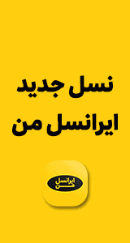

ژئوپلیتیک بحران، موقعیت ژئوپلیتیک، ژئوپلیتیک منطقه و ... ترکیبات واژگانی است که بارها در متونِ غالبا سیاسی و بینالمللی به آن برخوردهایم.
در ذهن اغلب مردم، «ژئوپلیتیک» (Geopolitics) مفهومی دربردارنده نوعی اهمیت و مزیت ذاتی برای کشورها است به این معنا که هر کشوری دارای موقعیت ژئوپلیتیک است یعنی تواناییهای زیادی برای پیگیری اهداف و منافع ملی دارد.
معنای واقعی ژئوپلیتیک اما سیاستِ جغرافیایی است یعنی همه تاثیراتی که جغرافیای یک منطقه بر رفتار و سیاست کشور یا کشورهای آن منطقه برجای گذارد. البته برخی ژئوپلیتیک را جغرافیای سیاسی ترجمه میکنند که با توجه به مفهوم آن نادرست است.
در تعریف ژئوپلیتیک گفته میشود که این مفهوم در سیاست خارجی کشورها رفتار سیاسی یا تواناییهای نظامی و امنیتی واحدهای ملی را برحسب مختصات محیط طبیعی توضیح میدهد و حتی پیش بینی میکند. بر اساس این رویکرد، ژئوپلیتیک با درجات مختلف بیانگر تاثیر جغرافیا بر امور تاریخی و سیاسی است.

بازگشت به دوران دو قطبی
دکتر سریعالقلم معتقد است که نظام بینالملل در حال حاضر در یکی از مهمترین مقاطع تاریخی خود قرار گرفته است. دکتر سریعالقلم استاد علوم سیاسی در دانشگاه شهید بهشتی در عین حال تعیین سرنوشت نهایی نظام بینالملل را منوط به نتایج انتخابات آمریکا میداند. از دیدگاه او با مشخص شدن نتایج انتخابات در این کشور نظام بینالملل وارد مرحله مهمی خواهد شد. با این استاد دانشگاه و پژوهشگر مسائل بینالملل درباره آینده نظام جهانی به بحث نشستیم.
نظریهپردازان روابط بینالملل در مورد جهان پس از جنگ سرد و ساختار نظام بینالملل اجماع نظری ندارند، عدهای معتقدند که جهان پس از جنگ سرد، جهانی تکقطبی است که در آن ایالات متحده آمریکا یک ابرقدرت چهاربعدی محسوب میشود. برخی دیگر نیز بر این اعتقادند که ساختار و پویش نظام بینالملل پس از جنگ سرد شکل تثبیتشدهای به خود نگرفت. به عبارت دیگر ما هماکنون در وضعیت گذار قرار داریم. نظر خودتان در این زمینه چیست، کدام نظریه به واقعیت نزدیکتر است؟
به نظر من، ما در حال حاضر در یکی از مهمترین مقاطع تعیینکننده تاریخی در شکلگیری نظام بینالملل قرار داریم که با انتخابات آمریکا وارد مرحله مهمی خواهد شد. در دهه 1990 میلادی و پس از فروپاشی شوروی یعنی زمانی که کلینتون رئیسجمهوری آمریکا بود، آمریکاییها در یک دوره مطالعه و تعیین جایگاه خودشان در نظام بینالملل قرار داشتند و دولت کلینتون نیز مبنا را بر همکاری و چندجانبهگرایی گذاشته بود.
اما با وقوع حادثه 11 سپتامبر، نظام بینالملل تا سال 2005 تحت تاثیر موضوع تروریسم و حملات آمریکا به افغانستان و عراق قرار گرفت. اما این به خودی خود نتوانست کانونی برای شکل دان به نظم جهانی باشد. به عبارت دیگر موضوع امنیت بینالمللی نتوانست کانون تئوریک ساختار بینالملل قرار گیرد و با افزایش تدریجی قیمت نفت و ظهور روسیه، هند و چین به عنوان سه قطب جدید اقتصادی در جهان ما به طرف یک نظام جدید بینالمللی حرکت کردیم، به نظر من مبنای ساختار جدید بینالمللی اقتصادی خواهد بود، البته با این تفاوت که کانون اقتصاد بینالمللی زمانی آمریکا، اروپا و ژاپن بود، ولی امروز بازیگران بسیار مهم و جدیدی به اقتصاد بینالملل اضافه شدهاند و سیاست جهانی را تحتالشعاع قرار دادهاند. یک مقایسهای در این مقطع بسیار حائز اهمیت است.
در دوره جنگ سرد سیاست از اقتصاد جدا بود. یعنی آمریکا در یک صحنه در پی تقابل ایدئولوژیک، سیاسی و نظامی با شوروی بود و در سطحی دیگر از روابط بینالملل نیز به دنبال قدرت اقتصادی و فناوری خود بود. به همین دلیل برای آمریکا امکان تفکیک وجود داشت ولی امروز این تفکیک امکانپذیر نیست و ما وارد عرصه جدیدی شدهایم، بهصورتی که نمیتوان به روسیه به عنوان یک قدرت سیاسی نگاه کرد.
امروز شش کشور عضو اتحادیه اروپا 90 درصد از نیاز گاز خود را از روسیه میگیرند. نکته دیگر اینکه 50 درصد نیاز گاز قاره اروپا را روسیه تامین میکند و 30 درصد نیازهای نفتی این قاره را نیز مسکو فراهم میکند. نزدیک به 60 درصد گاز شرق اروپا را نیز روسیه تامین میکند. این موضوع باعث وابستگی متقابل اقتصادی و سیاسی شده است. به نظر میرسد که ذخایر نفت و گاز و درآمد قابل توجه روسیه از محل فروش نفت و گاز یک قدرت بازیگری سیاسی به این کشور داده است. این موضوع کارغرب را سخت کرده است.
ما در مساله گرجستان مشاهده کردیم که تصمیمگیری اروپا، آمریکا و ناتو دیگر راحت نبود و عمدتا در حد اعتراض، مخالفت و جنگ لفظی بود. غرب در این حوزه نتوانست به اقدامی علیه حملات نظامی روسیه دست بزند. نظمی که در حال شکلگیری است، یک نظم عمدتا اقتصادی است. انحصار تاثیرگذاری سیاسی از دست آمریکا بیرون آمده است، هرچند که از نظر نظامی، آمریکا همچنان قدرت بلامنازع بینالمللی محسوب میشود. آمریکاییها با محاسبه عراق و افغانستان سالانه 700 میلیارد دلار صرف امور نظامی میکنند. این 700 میلیارد دلار تقریبا نزدیک به 4 درصد تولید ناخالص داخلی آمریکا است. کل اتحادیه اروپا برای برای بخش نظامی خود 170 میلیارد دلار هزینه میکند و چین حدود 60 میلیارد دلار به بخش نظامی اختصاص داده است.
این موضوع نشانگر آن است که ظرفیت آمریکاییها برای حفظ و افزایش قدرت نظامی قابل توجه است. بنابراین اگر بخواهیم تقسیمبندی و تفکیک کنیم، نظام بینالملل تکقطبی است و فناوری نظامی نیز در آمریکا متمرکز شده است. یکی از مشکلاتی که اروپاییها با آمریکا در عراق داشتند، این بود که آنها به لحاظ فناوری، چند مرحله پایینتر بودند و نمیتوانستند سیستمهای خود را با آمریکاییها تطبیق بدهند. اما در تمام موارد دیگر مثل حوزههای اقتصادی، صنعتی، مالی، هنری و اجتماعی قدرت در نظام بینالملل به طرف کانونهای متعدد در حال حرکت است.